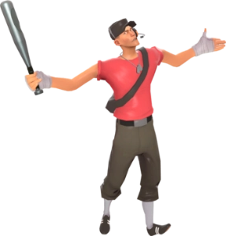

Arsenal
Escopeta

Pistola
Taco de baseball
Nascido e criado em Boston , Massachusetts , EUA , o Scout é um lutador veloz com um taco de baseball e uma atitude sarcástica "na sua cara". Ele é o mercenário mais rápido e móvel no campo de batalha. O salto duplo do Scout o ajuda a manobrar oponentes mais lentos como o Heavy e navegar pelo terreno enquanto desvia de balas e projéteis que se aproximam. Carregando uma Espingarda , Pistola e Bastão, ele é uma classe ideal para combates agressivos e flanqueamento. O Scout se destaca em táticas de "bater e correr" que esgotam a saúde do inimigo, pois sua alta mobilidade permite que ele entre, cause dano e escape antes de ser notado. No entanto, Scout possui a menor saúde padrão (ao lado do Engineer , Sniper e Spy ), deixando-o vulnerável na linha de frente. No entanto, esta é uma troca justa, dada a sua capacidade de entrar e sair de pontos quentes disputados rapidamente, permitindo-lhe mudar o rumo da batalha antes mesmo que o time inimigo perceba.
Scout é uma excelente escolha para focar nos objetivos. Ele é a única classe que pode capturar pontos de controle e empurrar carrinhos com o dobro da taxa normal. O Demoman e o Soldier só podem replicar esta habilidade ao equipar o Pain Train . Sua velocidade também o torna ideal para capturar pastas de inteligência .
O Scout é dublado por Nathan Vetterlein .